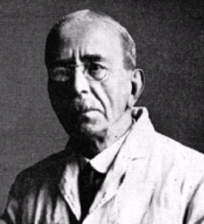

|  |
Sherrington's law = The law of reciprocal innervation: when one set of muscles is stimulated, muscles working against the activity of the first will be inhibited.
Sir Charles Scott Sherrington's research, spanning more than 50 years, laid the foundations for modern neurophysiology. He maintained that the most important function of the nervous system in higher animals is the coordination of the various parts of the organism. Although best known for his long series of studies on spinal reflexes, he made equally great strides in the physiology of perception, reaction, and behaviour. He was the first to adequately study the synapse and originated the term. He also introduced the term exterioceptor, proprioceptor and viscerocepter. In 1932 he shared the Nobel Prise in Physiology or Medicine with Edgar Douglas Adrian.
Sherrington was the son of Anne Brookes and James Norton Sherrington, of Caister, Great Yarmouth, a country physician who died when he was quite young. His mother married Caleb Rose, Jr., of Ipswich, a physician of wide cultural interests and a noted archaeologist. The Rose home, a gathering place for artists and scholars, helped to shape Sherrington's broad interest in science, philosophy, history, and poetry. One of his schoolmasters, Thomas Ashe, was a poet of considerable distinction.
After attending the Ipswich Grammar School from 1870 to 1875, Sherrington, encouraged by his stepfather, began medical training at St. Thomas’s Hospital in London. He passed the primary examination of the Royal College of Surgeons in 1878, and a year later the primary examination for the Fellowship of that College.
In 1879 he went to Cambridge as a noncollegiate student studying physiology under the “father of British physiology”, Sir Michael Foster (1836-1907), and in 1880 entered Gonville and Caius College there. During the years 1881-1885 he worked chiefly under two of Forster's pupils who were already becoming world famous – John Newport Langley (1852-1925) and Walter Gaskell (1847-1914). Langley and Gaskell imparted to him their dominant interest in how anatomical structure reflects, or is expressed in, physiological function.
In 1881 he attended a medical congress in London at which Sir Michael Foster discussed the work of Sir Charles Bell and others on the experimental study of the functions of nerves that was then being done in England and elsewhere in Europe. At this congress controversy arose about the effects of excisions of parts of the cortex of the brains of dogs and monkeys done by David Ferrier (1843-1928) and Friedrich Leopold Goltz (1834-1902) of Strasbourg. Subsequently, Sherrington worked on this problem in Cambridge with Langley, and with him published, in 1884, a paper on it. In this manner Sherrington was introduced to the neurological work to which he afterwards devoted his life.
In 1883 Sherrington became Demonstrator of Anatomy at Cambridge under Professor Sir George Humphrey, and during the winter session of 1883-1884 at St. Thomas's Hospital he demonstrated histology.
From 1884 to 1887 Sherrington completed his medical courses. After graduation he worked with Langley, studying the anatomical changes in the cord and brain stem of decorticate dogs which had first been exhibited by Friedrich Goltz at the International Congress in 1881. This led to the first of many visits to Goltz' laboratory in Strassburg.
Between 1884 and 1887 he turned his attention to bacteriology. In 1885 Sherrington went, as a member of a Committee of the Association for Research in Medicine, to Spain to study an outbreak of cholera, and in 1886 he visited the Venice district also to investigate the same disease. In Spain he met Santiago Ramón y Cajal (1852-1934) and later persuaded him to lecture in England. He also went to Berlin to have the cholera material examined under the supervision of Rudolf Virchow (1821-1902), who later sent Sherrington to Robert Koch (1843-1910) for a six weeks' course in technique. Sherrington stayed with Koch to do research in bacteriology for a year. Thus he gained a superb grounding in physiology, morphology, histology, and pathology.
He obtained his M.R.C.S. in 1884 and in 1885 a First Class in the Natural Sciences Tripos at Cambridge with distinction. During this year he published a paper of his own on the subject of Goltz's dogs. In 1885 he also took his M.B. degree at Cambridge and in 1886 became a Licentiate of the Royal College of Physicians.
In 1887 Sherrington was appointed lecturer in physiology at St. Thomas’s medical school in London, where he continued to investigate the spinal tract. From 1891 to 1905 he served as physician-superintendent of the Brown Institution, a centre for human and animal physiological and pathological research, succeeding Sir Victor Alexander Haden Horsley (1857-1916). Here he was able to observe animals with chronic spinal lesions.
In 1895 Sherrington was appointed Holt Professor of physiology in Liverpool, where he did much of his best work. From 1913 until his retirement in 1935 he held Waynflete chair of physiology at Oxford, succeeding Francis Gotch (1853-1913).
Research
Working on cats, dogs, monkeys and apes that had been bereaved of their
cerebral hemispheres, he found that reflexes must be considered integrated
activities of the total organism, not just the result of the activities
of the so-called reflex-arcs, a concept then generally accepted. The proofs
supporting "total integration" were his demonstration during the years
1895 to 1898 of reciprocal innervation of muscles, also known as Sherrington's
law: when one set os muscles is stimulated, muscles working against the
activity of the first will be inhibited.
He developed the theory of transmission at the synapse being in one direction, decerebrate rigidity was then a background in which the presence of reciprocal inhibition was lost and these findings and theories resulted in his publication in 1906 a monograph entitled Integrative action of the nervous system which remains a classic.
In this classic of modern neurology, he summed up his years of experiments and observations on the nervous system and the reflexes and developed a theory that has had a far-reaching and profound influence on modern neurophysiology and clinical neurology. Briefly, his theory was that the nervous system acts as the coordinator of various parts of the body and that the reflexes are the simplest expressions of the interactive action of the nervous system, enabling the entire body to function toward one definite end at a time. Shared the Nobel prize with Adrian for their work on the nervous system.
He established the nature of postural reflexes and their dependence on the anti-gravity stretch reflex and traced the afferent stimulus to the proprioceptive end organs which he had already shown to be sensory in nature.
Most of his work occurred after he had been appointed professor of physiology at Liverpool on 1895.
The man
Sherrington married Ether Wright of Suffolk, England, on August 27,
1891; their only child, Carr E. R. Sherrington, was born in 1897
In physique Sherrington was a well-built, but not very tall man with a strong constitution which enabled him to carry out prolonged researches. During the First World War, as Chairman of the Industrial Fatigue Board, he worked for a time in a shell factory at Birmingham, and the daily shift of 13 hours, with a Sunday shift of 9 hours, did not, at the age of 57, tire him. From his early years he was short-sighted, but he often worked without spectacles.
Besides his scientific work Sherrington was a man of wide interests and accomplishments: biographer, medical historian, poet, and book collector – and sportsman. As a boy and a young man Sherrington was a notable athlete both at Queen Elizabeth's School, Ipswich, where he went in 1871, and later at Gonville and Caius College, Cambridge, for which College he rowed and played rugby football; he was also a pioneer of winter sports at Grindelwald, Switzerland.
Sherrington always had a love for classics and poetry and in 1925 published a volume of collected verse, The Assaying of Brabantius and other Verse.
Following his retirement he published Man on his Nature, which centres round the life and views of the 16th century French physician Jean Fernel , and in 1946 The Endeavour of Jean Fernel.
He was elected President of the Royal Society of Physicians in 1920 and held this chair of honour for five years. Other honours included the Knight Grand Cross of the British Empire (1922) and the Order of Merit (1924). At his death he was an honorary fellow, member, or associate of more than forty academies, and he had received honorary degrees from twenty-two universities.
In 1932 Sir Charles Scott Sherrington shared the Nobel Prise in Physiology or Medicine with Edgar Douglas Adrian, 1st Baron Adrian (1889-1977). The received the prize "for their discoveries regarding the function of neurons."
From 1941 onwards he developed a painful arthritis which remained with him until he died. Right until the end he maintained his mental alertness and was an entertaining conversationalist.
Paradoxical though it may sound, the more skilfully a demonstration
experiment is performed the less from it do some students learn.
Mammalian Physiology, Preface.
"It is as if the Milky Way entered upon some cosmic dance. Swiftly the
brain becomes an enchanted loom, where millions of flashing shuttles weave
a dissolving pattern, always a meaningful pattern though never an abiding
one; a shifting harmony of subpatterns."
The Integrative Action of the Nervous System
Men think themselves free, because they are conscious of their volitions
and of their desires and are oblivious to the causes which dispose them
to desire and to will.
Man On His Nature, page 163
Swiftly the head-mass becomes an enchanted loom where millions of flashing
shuttles weave a dissolving pattern, always a meaningful pattern though
never an abiding one; a shifting harmony of sub-patterns. Now as the waking
body rouses, subpatterns of this great harmony of activity stretch down
into the unlit tracks of the stalk-piece of the scheme. Strings of flashing
and travelling sparks engage the lengths of it. This means that the body
is up and rises to meet its waking day.
Man On His Nature, page 178
The mind is a something with such manifold variety, such fleeting changes,
such countless nuances, such wealth of combinations, such heights and depths
of mood, such sweeps of passion, such vistas of imagination, that the bald
submission of some electrical potentials recognizable in nerve-centres
as correlative to all these may seem to the special student of mind almost
derisory. It is, further, more than mere lack of corresponding complexity
which frustrates the comparison.
Man On His Nature, page 228
If as you say thoughts are an outcome of the brain we as students using
the energy-concept know nothing of it; as followers of natural science
we know nothing of any relation between thoughts and the brain, except
as a gross correlation in time and space. In some ways this is embarrassing
for biology.
Man On His Nature, page 229
We have to regard the relation of mind to brain as not merely unresolved
but still devoid of a basis for its very beginning.
Man On His Nature
The eye sends, as we saw, into the cell-and-fibre forest of the brain,
throughout the waking day continual rhythmic streams of tiny, individually
evanescent, electrical potentials. This throbbing streaming crowd of electrically
shifting points in the spongework of the brain bears no obvious semblance
in space-pattern, and even in temporal relation resembles but a little
remotely the tiny two-dimensional upside-down picture of the outside world
which the eyeball paints on the beginnings of its nerve-fibres to the brain.
But that little picture sets up an electrical storm .... A shower of little
electrical leaks conjures up for me, when I look at him approaching, my
friend's face, and how distant he is from me they tell me. Taking their
word for it, I go forward and my other senses confirm that he is there.
Man On His Nature, page 128-129
Reference:
Historical Reflections on the Backgrounds of Neurophysiology: Inhibition,
Excitation, and Integration of Activity. In Chandler M. Brooks and
P. F. Cranefield, editors, The Historical Development of Physiological
Thought. New York, 1959.